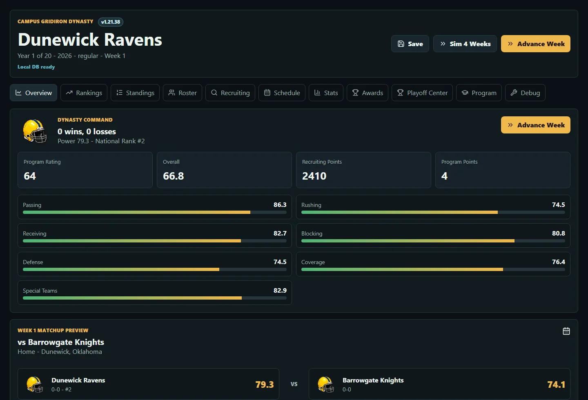

- Simulation
- 20 seasons
- World
- 70 programs
- Roster
- 85 players / team
Simulation system · React + TypeScript
Campus Gridiron Dynasty
A fictional college-football world with recruiting, coaching movement, awards, budgets, bowls, playoffs, and twenty seasons of consequences.
Frame
Make a deep simulation readable at a glance.
A dynasty only works when thousands of moving parts still resolve into a clear next decision. The interface keeps the week, program, matchup, and long-term arc in view without flattening the depth.
Build
Connect the systems so choices carry forward.
Seventy programs, 85-player rosters, recruiting classes, hidden traits, coaching changes, budgets, rankings, awards, bowls, and an eight-team playoff all evolve inside one persistent save.
Verify
Test the long loop, not just the happy path.
Simulation-heavy tests run alongside repeatable browser smoke checks across Chromium, WebKit, and an iPhone profile—forcing playoffs, awards, recruiting, and multiple seasons so regressions surface before release.